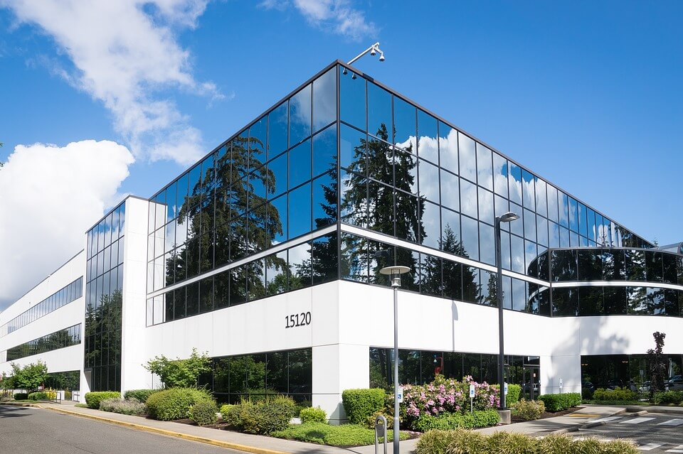
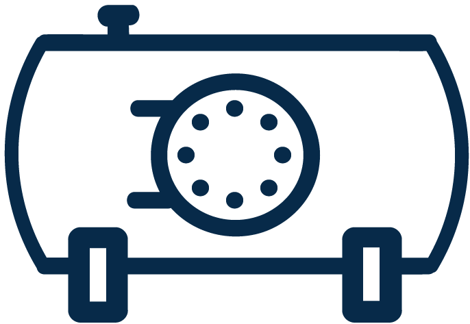

Estamos comprometidos en brindar soluciones adecuadas a problemas de operación y de funcionalidad a calderas y equipos generadores de vapor en general, asegurando su correcta operación y máximo rendimiento, a través de un servicio especializado de reparación y mantenimiento a sus equipos; contando con un equipo humano profesional e innovador para garantizar su plena y absoluta satisfacción.

La experiencia profesional de 30 años de servicio nos respaldan para ayudarle a seleccionar el equipo industrial más adecuado a sus necesidades, así como también para brindarle la solución más idónea a sus problemas de operación en calderas, lo cual nos permite sin lugar a dudas ofrecer servicios y productos de las más alta calidad a nuestros clientes como una opción seria y confiable. En SERVICIO TÉCNICO A CALDERAS nuestra prioridad es usted por lo que le ofrecemos:

¿PORQUÉ ADQUIRIR NUESTROS SERVICIOS?
Nuestro compromiso es servirles como ustedes se merecen, proveyendo de todo lo indispensable para sus calderas, mejorando el desempeño y la confiabilidad de las mismas en un tiempo mínimo de respuesta, con la máxima rapidez y la mayor eficiencia.
Brindamos un servicio especializado, personalizado y 100% garantizado para mantener sus equipos en óptimas condiciones de acuerdo a las necesidades y objetivos de cada empresa.
Gracias al respaldo de los proveedores de las marcas más reconocidas, contamos con un amplio stock de partes de reemplazo, refacciones y equipos complementarios para sus calderas y así ofrecerles un excelente servicio.
Ofrecemos el mejor servicio de carburación en base al cumplimiento de las normas oficiales.
Nuestro personal está altamente calificado, cuenta con la experiencia y el profesionalismo para resolver sus necesidades y superar sus expectativas.